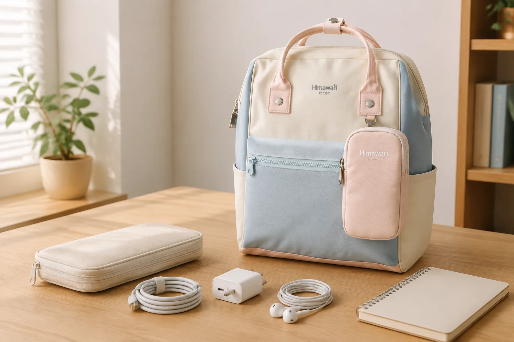

충전기·케이블 백팩 수납법: 엉키지 않게 나누는 5단계

충전기와 케이블을 백팩에 그대로 넣으면 필요한 순간에 서로 얽히고, 단단한 플러그가 다른 물건을 누르기 쉽습니다. 해결의 핵심은 수납 도구를 많이 사는 것이 아니라 매일 쓰는 전자기기 액세서리를 줄이고, 종류와 사용 순서에 따라 자리를 고정하는 것입니다.
1. 가방 속 전자기기 액세서리를 모두 꺼내세요
충전기, 케이블, 보조배터리, 이어폰, 변환 젠더를 한곳에 펼칩니다. 한 주 동안 사용하지 않은 여분 케이블과 용도를 모르는 부품은 매일 들고 다닐 목록에서 빼세요. 집, 사무실 또는 여행용으로 자리를 나누면 백팩 속 중복을 줄이기 쉽습니다.
2. 단단한 것과 부드러운 것을 분리하세요
충전기와 보조배터리처럼 무게와 모서리가 있는 물건은 한 구역에, 케이블과 이어폰처럼 눌리거나 엉키기 쉬운 물건은 다른 구역에 둡니다. 단단한 플러그가 노트북이나 안경에 직접 닿지 않도록 별도 포켓이나 천 파우치를 활용하세요.
노트북을 함께 넣는다면 화면 크기만 보지 말고 실제 수납칸과 다른 물건이 만나는 위치를 확인해야 합니다. 노트북 수납칸 고르는 체크리스트에서 비교 순서를 확인할 수 있습니다.
3. 케이블은 느슨하게 감고 단자를 보호하세요
케이블을 너무 작게 접거나 단자 바로 옆을 급하게 꺾지 않습니다. 제품이 자연스럽게 휘는 범위에서 느슨하게 감고, 찍찍이 밴드나 재사용 가능한 묶음끈으로 가운데를 가볍게 고정하세요. 제조사에서 별도 보관법을 안내한다면 그 내용을 우선합니다.
4. 사용 빈도에 따라 파우치 안의 자리를 정하세요
매일 꺼내는 충전 케이블은 파우치를 완전히 뒤집지 않아도 잡히는 위치에, 가끔 쓰는 젠더는 안쪽 칸에 둡니다. 비슷한 케이블이 여러 개라면 크기나 단자 모양이 보이도록 나란히 두면 찾는 시간이 줄어듭니다. 작은 부품은 지퍼가 있는 구역에 넣어 흩어지지 않게 합니다.
5. 파우치 위치를 가방 안에서 고정하세요
파우치를 매번 다른 곳에 넣으면 정리해도 찾기 어렵습니다. 등에 가까운 평평한 수납칸은 노트북이나 서류에 양보하고, 케이블 파우치는 가방 중간이나 별도 포켓처럼 손이 기억하기 쉬운 한곳에 둡니다. 물병이나 젖을 수 있는 물건과는 분리하세요.
하루가 끝나면 사용한 액세서리가 모두 돌아왔는지 확인하고 필요 없는 영수증이나 포장지를 꺼냅니다. 매일 짐을 줄이는 전체 흐름은 백팩 수납 루틴과 함께 적용하면 좋습니다.
출발 전 5문장 점검표
- 오늘 쓸 기기에 맞는 충전기와 케이블인가요?
- 단단한 플러그가 노트북과 분리되어 있나요?
- 케이블이 너무 작게 꺾이거나 눌리지 않나요?
- 보조배터리와 기기 상태를 제조사 안내에 따라 확인했나요?
- 파우치를 가방 안의 정해진 위치에 넣었나요?
참고·안내
- Himawari 제품별 수납 구성 보기
- 충전기, 케이블과 보조배터리의 사용·보관은 각 제조사의 제품 안내를 우선해 주세요.
자주 묻는 질문
케이블을 너무 작게 감아도 되나요?
케이블이 꺾이거나 단자 가까이가 눌리지 않도록 제품이 자연스럽게 휘는 범위에서 느슨하게 감고, 제조사 관리 안내가 있다면 이를 따르세요.
충전기와 보조배터리를 노트북과 같은 칸에 넣어도 되나요?
단단한 모서리와 플러그가 기기 표면을 누르지 않도록 별도 포켓이나 파우치로 분리하는 편이 정리하기 쉽습니다.
케이블 파우치는 큰 것이 좋은가요?
필요 이상으로 크면 물건이 섞이고 빈 공간을 차지할 수 있습니다. 매일 쓰는 구성만 펼쳐 놓고 한눈에 찾을 수 있는 크기를 고르세요.